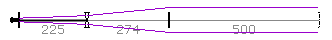

LaserCanvas 5 > Tutorials > Collimating Telescope >
We wish to find an optic spacing that creates a beam size of 2 mm at the collimating lens. As an approximately collimated condition, we specify that we wish the waist position to be 100 m after the lens. In addition, we add Solver penalties for variables x and y should they become negative or larger than 500 mm. See also the Solver section.
|
(L4.w_sag-2000)^2 + 1e-6*(L4.z0_sag-100000)^2 + (y<0)*y^2 + (y>500)*(y-500)^2 + (x<0)*x^2 + (x>500)*(x-500)^2 |
